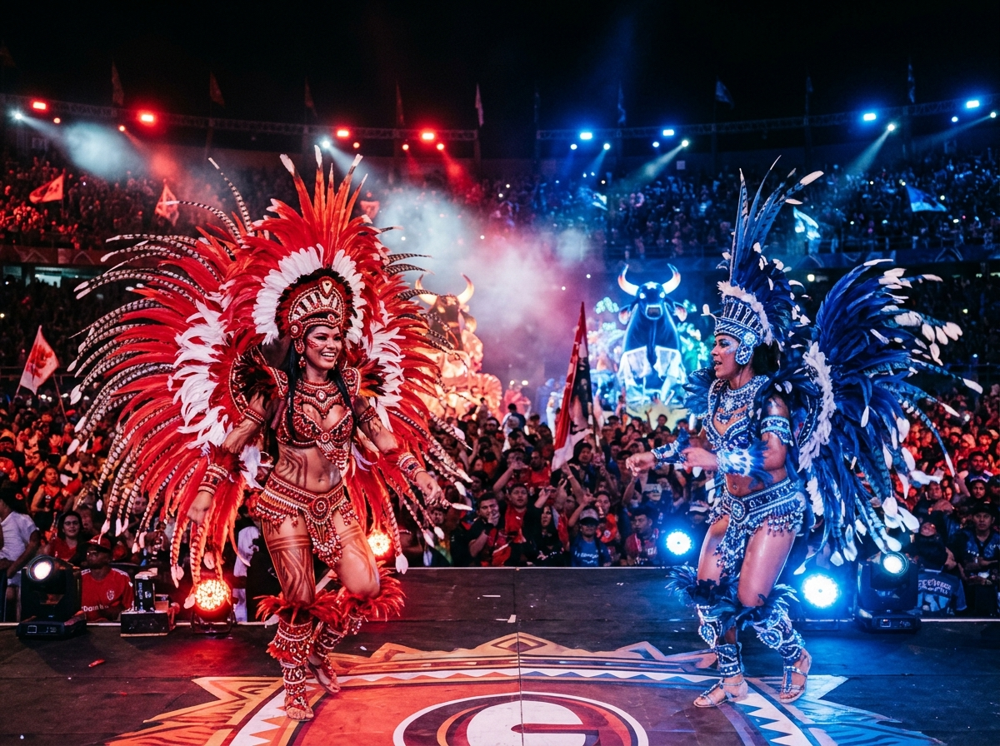

Festival de Parintins
O histórico embate artístico entre os bois Garantido (vermelho da paixão) e Caprichoso (azul da estrela), que atrai dezenas de milhares de espectadores na Ilha Tupinambarana, no Amazonas.
Salvar RoteiroA maior região em extensão territorial é berço de uma biodiversidade incomparável e abriga povos originários, comunidades ribeirinhas e celebrações monumentais que mesclam misticismo indígena e fé popular.

O histórico embate artístico entre os bois Garantido (vermelho da paixão) e Caprichoso (azul da estrela), que atrai dezenas de milhares de espectadores na Ilha Tupinambarana, no Amazonas.
Salvar RoteiroConsiderado o "Natal dos Paraenses", é uma das maiores procissões católicas do planeta, reunindo mais de dois milhões de devotos nas ruas de Belém do Pará todo mês de outubro.
Salvar RoteiroPatrimônio Cultural Imaterial do Brasil, o carimbó contagia pelo toque vigoroso dos tambores curimbó, saias rodadas e passos que remetem ao trabalho dos pescadores e agricultores paraenses.
Salvar Roteiro